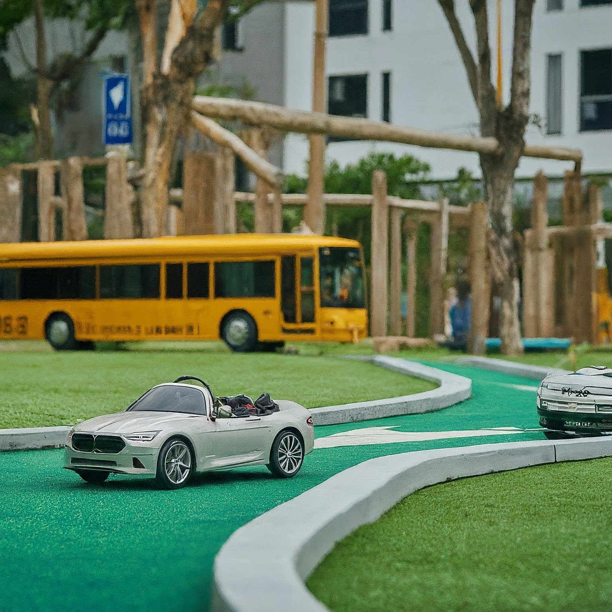
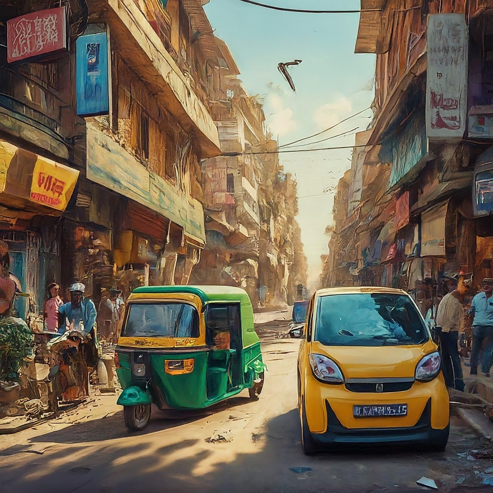
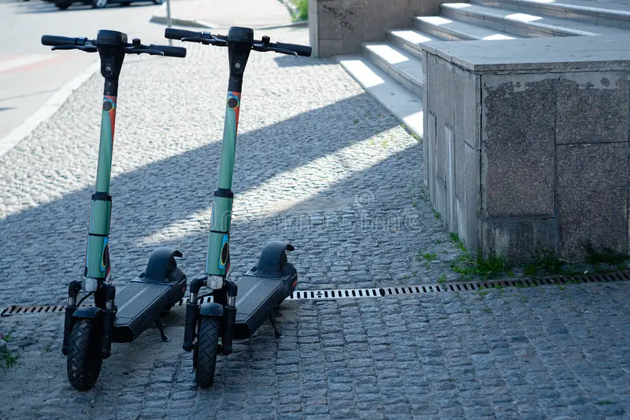

Sustainable Transportation and Fuels | Department of Energy

Electrifying Public Transit: Why It Matters and How to Do It | The Conversation
India's Electric Vehicle Push: Can It Succeed? | The Diplomat
Micromobility: The Tiny Vehicles Transforming Cities | World Economic Forum